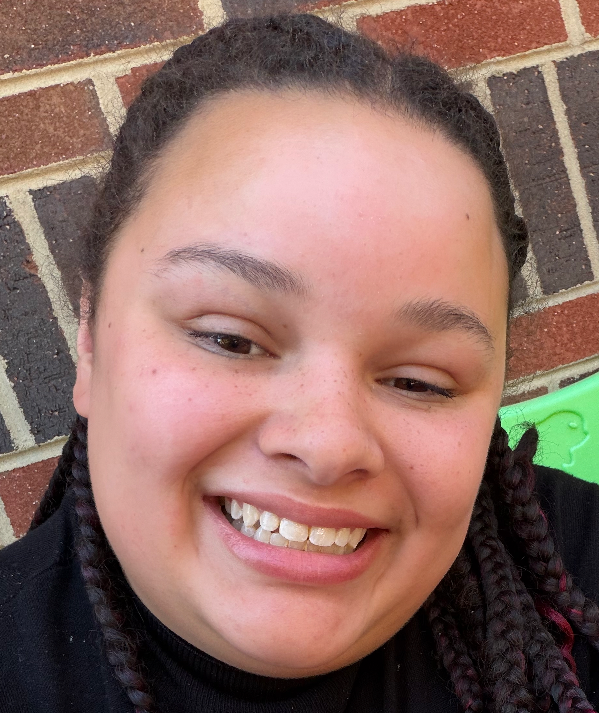

Breiana Sisk

Contact
Passions
Objective
A determined individual looking to encompass many passions
into a single career by applying computational and research
skills and lived experiences.
Education
- The North Carolina School of Science and Math Durham, NC August 2020 - May 2022
- Hickory High School Hickory, NC August 2018 - June 2020
Work Experience
-
Kidspoint Childcare Hickory, NC May 2025 - Present
Lead 1 year old Teacher
-
Create newsletters and weekly lesson plans with acitivites.
Maintain a high energy and attentive demeanor.
Have quick response times and reflexes.
-
Create adertising and marketing pitches on social media platforms.
Skills
Leadership
- Hickory High Orchestra- committed to orchestra since 2015, recognized as first chair bassist,
contained the order in my section, represented Hickory in the UNCG ensemble in 2019
- Volunteer for Westview church- committed time for outreach to the community, led a significant
part of the outreach that distributed clothing and gave room for more donations, developed methods
to effectively get the message of Westview across.
- El Centro Hispano- Tutor and guide children that are Hispanic and communicate with parents in Spanish
to provide information about how their child is doing. Creating study guides and schedules for what the
student is to achieve during each meeting.
- Nurture Nature Club- Founder and President who focuses on outreach into the community through gardening
and plants but also focusing on improving awareness of mental health
- Helping Give Away Psychological Science- leader of several subgroups within the club, working directly
in psychology fields with professionals
Teamwork
- Worked with other musicians and students during club activities and orchestra
- Motivated outreach and missionary work with the church choir
- Strategically considered all opinions and interests when organizing ideas of community improvement
- Encouraged colleagues for improvement of academic performance through tutoring
- Working with professionals and colleagues to extend knowledge of psychology to the public.
- Recieved a Early Childhood Credintial by completeing EDU 119 at Catawna Valley Community College in Hickory, NC
Technical
- Used Wikitext to create different infographics and pages.
- Coding languages: Wikitext
-
Wikitext has close ties with HTML
- Exposure to: Python, C++, R, HTML, CSS
- Data gathering and analysis
- Effective research strategies